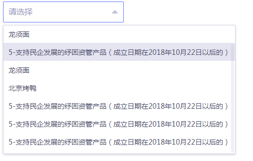
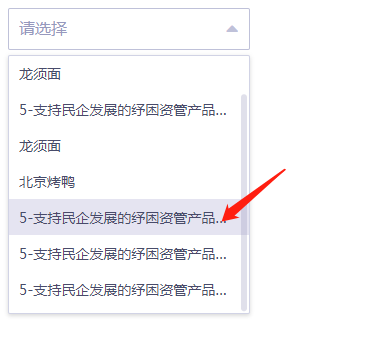

我用的element-ui是V1.4.3.
目前遇到一个问题，在用el-select组件的时候，当选项的内容很长的时候，会撑开下拉菜单的宽度，这样影响美观。具体如下图所示：

解决这个问题的思路：设置下拉菜单的最大宽度，然后文字超出时，出现横向滚动条。
解决时的问题就是，设置了宽度，横向滚动条却不出现，如下图所示，直接将超出的文字隐藏，并且后面添加省略号

最后我添加了如下的代码：
.el-select-dropdown{
max-width: 243px;
}
.el-select-dropdown__item{
display: inline-block;
}
.el-select-dropdown__item span {
min-width: 205px;
display: inline-block;
}效果如下，横向滚动条顺利出现：